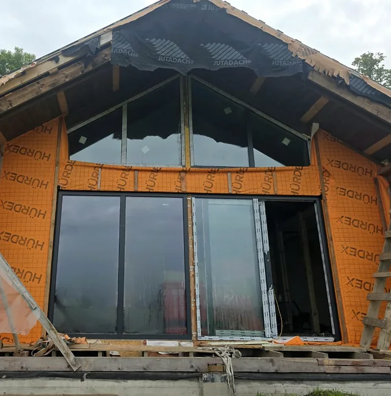

Reģistrēts būvkomersants · BIS Nr. 17322
Visi būvdarbi no pamatiem līdz jumtam
Arī iekšējā apdare. Skolas, sabiedriskās ēkas un privātmājas Latvijā.

Profesionālisms un kvalitatīvs rezultāts
Mūsu darbi
Fotogrāfijas no mūsu objektiem: skolas gaitenis un sanitārie mezgli, telpa pēc remonta, jumts un fasāde. Katru fotogrāfiju var atvērt lielākā izmērā.

Skolas gaitenis 
Jumts 
Zēnu tualete skolā 
Skolas sanitārais mezgls 
Fasāde un logi 
Sanitārais mezgls 
Kabīnes un sienu paneļi 
Tualetes kabīne 
Izlietne 
Skolas telpa Nākamais objekts var būt jūsu
+371 22 347 075


Ko darām
No pamatiem līdz jumtam un iekšējā apdare: sabiedriskās ēkās, piemēram, skolās, un privātmājās.
No pamatiem līdz jumtam
Visi būvdarbu veidi: pamati, sienas, jumti.
Iekšējā apdare
Sienu un griestu apdare, grīdas, krāsošana, flīzēšana.
Sanitārie mezgli
Tualetes un dušas telpas: flīzes, kabīņu starpsienas, sienu paneļi, santehnikas montāža, arī nerūsējošā tērauda.
Ēku remonts
Sabiedrisko ēku, piemēram, skolu, un privātmāju remonts. Logu un durvju nomaiņa kā daļa no remonta.
Vajadzīgā darba sarakstā nav? Piezvaniet un pajautājiet: +371 22 347 075
Kā strādājam
Zvans vai e-pasts
Pastāstiet, kas jāizdara un kur. Objekta fotogrāfijas vai projekts e-pastā palīdz saprast darbu apjomu.
Apjoms un termiņi
Vienojamies par darbiem, materiāliem un laiku, kad sākt.
Darbi objektā
Strādājam pēc saskaņotā plāna un uzreiz sakām, ja objektā atklājas kaut kas jauns.
Nodošana
Kopā apskatām paveikto, un jūs saņemat gatavu objektu.
Reģistrēts būvkomersants
SIA „Eksperts D” ir reģistrēta Būvkomersantu reģistrā. Datus var pārbaudīt Būvniecības informācijas sistēmā bis.gov.lv un Uzņēmumu reģistrā.
- 17322Būvkomersantu reģistra numurs, reģistrēts 19.05.2022
- 2022Uzņēmums reģistrēts 29.04.2022
- PVNPVN maksātājs kopš 28.12.2022, Nr. LV40203396894
- Nosaukums
- SIA „Eksperts D”
- Reģ. Nr.
- 40203396894
- PVN Nr.
- LV40203396894
- Pamatdarbība (NACE)
- 41.00 Dzīvojamo un nedzīvojamo ēku būvniecība
- Juridiskā adrese
- Centra iela 3B-18, Sondori-Škeņeva, Vērēmu pag., Rēzeknes nov., LV-4647
Pastāstiet, kas jāizdara
Piezvaniet vai uzrakstiet: kādi darbi vajadzīgi, kur atrodas objekts un kad vēlaties sākt. Atbildēsim un vienosimies par nākamo soli.
+371 22 347 075 ekspertsd@inbox.lvKo uzrakstīt e-pastā
- objekta adresi
- kādi darbi vajadzīgi
- objekta fotogrāfijas vai projektu pielikumā
